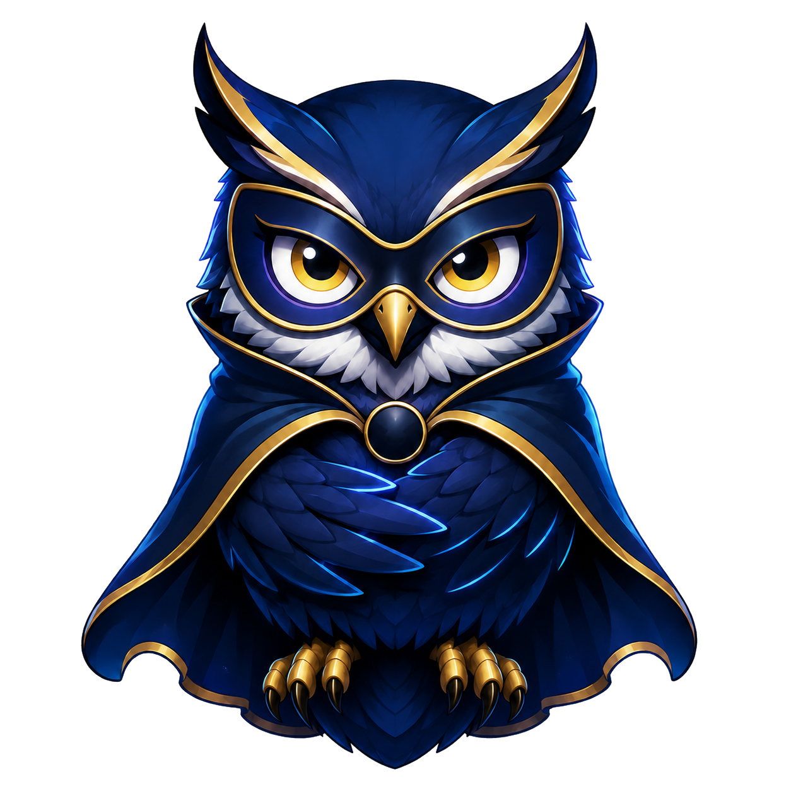

Soirées européennes
Bienvenue dans le Nid européen.
Tout ce qui compte maintenant, sans dérouler tout le calendrier sous ton bec.
Classements, soirées européennes et LIVE dans le même Nid. 🦉🏆
Tout ce qui compte maintenant, sans dérouler tout le calendrier sous ton bec.
Aucun pronostic à compléter.

« Les casseroles ont déjà réservé leur soirée. »
Les scores sont modifiables jusqu'au coup d'envoi. Les journées UEFA restent indépendantes des jours calendaires.
Pronostics déjà joués, résultats et points obtenus.
Aller-retour, cumul, score à 120 minutes, tirs au but et qualifié. Le tableau se propage automatiquement quand une confrontation est terminée.
Classement général, départages complets et mouvements en direct.
| # | Δ | Joueur | Pts | Exacts | Préc. | Moy. | Écart | Joués |
|---|
Tendances collectives calculées uniquement sur les pronostics déjà verrouillés.
Les résultats vont bientôt tester les plumes.
Phase de ligue, éliminations et chemin complet jusqu’à la finale.
Statut : préparation
Barème : 0 / 3 / 5 / 7
Le calendrier attend ses premières rencontres.
Journées UEFA, dates françaises et état des rencontres.
Badges, records, casseroles et coups de génie.
Une seule Team par saison. Une identité commune, des cadres reconnaissables et trois classements dédiés.
Moyenne générale, Top 3 et performance de la journée UEFA sélectionnée.
Les Teams privées restent visibles mais leur entrée est contrôlée par le capitaine ou un code d'invitation.
Un duel par journée UEFA. Aucun point bonus : seulement l’honneur, les statistiques et les piques du Hibou.
Ton identité dans le Nid et tes deux paris les plus importants de la saison.
Choisis un Hibou officiel ou envoie ton propre PNG/JPG/WebP. Les uploads personnels passent par la modération Admin.
Ton appartenance actuelle et son identité visuelle.
Choisis ce qui peut te prévenir, le niveau de piquant du Hibou et les heures où le Nid doit se taire.
Fermer ta session sur cet appareil. Tes pronostics, ton profil et tes réglages restent enregistrés.
Le choix n°1 vaut 100 points. Le choix n°2 vaut 50 points lorsqu'il s'ouvre après la phase de ligue.
Secret jusqu'au verrouillage. Les autres joueurs ne voient pas tes choix tant que la fenêtre correspondante reste ouverte. Si le premier choix est oublié, l'OM est attribué automatiquement.
Un espace par métier, sans dérouler toute l'administration sur une seule page.
Les accès rapides vers les zones que tu utilises vraiment.
Phase de ligue, phases finales et finale dans le même espace de pilotage.
Les scores restent sous contrôle Admin et le classement provisoire suit immédiatement.
Créer une journée, ajouter une rencontre, passer LIVE et saisir les résultats sans chercher dans la page.
Passe un match LIVE, modifie son score autant de fois que nécessaire puis termine-le.
Retrouve ici les pages de validation de chaque jalon, puis les outils de matchs TEST et de rappels.
La V0.9.11 ajoute les cotes Betclic expérimentales et l’ouverture progressive des fonctions. Commence par son Centre automatique, puis reprends le road-check guidé avant V0.10.0.
Terminal : node tests\run-all-v0.9.11.mjs · Le grand road-check est maintenant prêt à être exécuté.
Chargement…
Chaque match possède sa propre équipe domicile, équipe extérieure, stade, pays, date et heure. Le lieu est prérempli depuis l'équipe domicile mais reste modifiable.
« Vider les matchs TEST » ne touche qu'aux rencontres créées par cet onglet. « Vider tous les matchs » supprime toutes les rencontres, toutes les journées et tout le tableau de phase finale de la saison, y compris les anciennes données TEST.
Synchronisation, bibliothèque des clubs, cotes et préparation des phases finales.
Football-Data synchronise la Champions League 2026–27, le Centre C1 (résultats, classement, phases) et la bibliothèque Top 5. Les données du Centre C1 restent séparées du barème de pronostics.
Le calendrier officiel intégré sert de socle. Tes corrections manuelles peuvent être verrouillées ; Football-Data complète ensuite ce qu’il publie sans supprimer les rencontres absentes de sa réponse.
Ajoute une équipe ou corrige son pays, son stade, son nom ou son logo. Un verrou empêche Football-Data d’écraser la correction.
Prépare le tableau, règle les multiplicateurs et saisis le tirage officiel.
Le générateur TEST crée l'ensemble du tableau et reporte automatiquement les gagnants.
x1 / x2 / x3 / x4, appliqués aux matchs à venir.
Pour saisir le tirage officiel d'un tour sans utiliser le générateur TEST.
Score final à 120 minutes si prolongation ; tirs au but saisis séparément.
Retrouve rapidement un compte, ouvre son profil et traite les demandes ou avatars.
Supabase crée le compte, mais seul le Super Admin ouvre la porte du Nid.
Valide ou refuse les images personnelles avant leur affichage public.
Annuaire, membres, capitaine, identité et historique au même endroit.
Les capitaines gèrent leur Team ; l'Admin intervient en correction ou modération.
Badges extensibles, Casseroles, Génie, records, laboratoire et clôture de saison.
Hibou masqué, tickets privés et Web Push regroupés dans un seul espace.
Messages globaux, Team ou individuels.
Conversations privées, captures et diagnostic technique.
Journal de livraison, appareils et test Push vers toi ou un joueur précis.
Réglages globaux, saisons, sauvegardes, exports et traçabilité réunis au même endroit.
Ces actions ne modifient aucune donnée métier dans Supabase.
Efface pronostics de test, favoris, badges obtenus, casseroles, records et scénarios de répétition, mais conserve les comptes, les Teams, les clubs et le calendrier réel. Cette action est bloquée après le premier coup d’envoi.